Redesigning mobile Virtual Wallet accounts
Challenge
Redesign Account Activity in PNC’s mobile app to incorporate additional content for Virtual Wallet accounts.
Outcome
New insights and banking tools included for VW accounts, as well as improved hierarchy and usability for all accounts in the app.
RoleDesign Lead
Team Product Manager (VW team), Developer Team
Overview
This project was part of a larger initiative to combine PNC's two mobile apps: one for “general” customers, and one for customers with Virtual Wallet, a special set of accounts and banking tools.
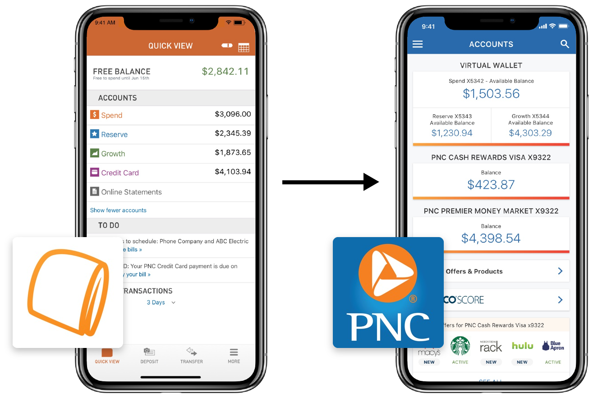The general app provides basic account info (i.e. account balance, transactions), while the Virtual Wallet app supports additional banking features included with the product. Poor marketing was causing confusion among customers about which app to download.
To unify PNC's mobile banking strategy, my team worked with the PNC Mobile team to bring Virtual Wallet features into the latter's app. My task was to incorporate new content into the Account Activity section.
Research
Initial Interviews
To start, I sought to find out how people generally manage their finances with Account Activity. These were informal interviews with colleagues, friends and family.
A common thread people shared was visiting Account Activity to see what else they need to do, whether viewing data or moving money. This led me to set navigation to management tools as a primary goal of the redesign.
Target User
Because of the broad range of user needs, I defined a target user to help focus our direction (who is most benefitted by the changes we're making? who do we want to appeal to?).
Profile
- Age: 30-40
- Middle class workers & families
- Rents or owns a home
- Tech-savvy
User Needs
- Be financially responsible (i.e. pay bills)
- Save for short- and long-term financial goals
This user is often busy and appreciates the ability to bank on-the-go. He likes banking with the VW tools, but has the PNC app instead of the VW app where the tools are.
I would use [the tools] in my Virtual Wallet more, but I have to go on my computer to do anything.
Organizing Content
I performed tasks like card sorts and paper prototype tests to learn about customers' mental models of their VW tools and accounts. This process involved bottom-up (sorting by users) and top-down (testing designs I made) research.
 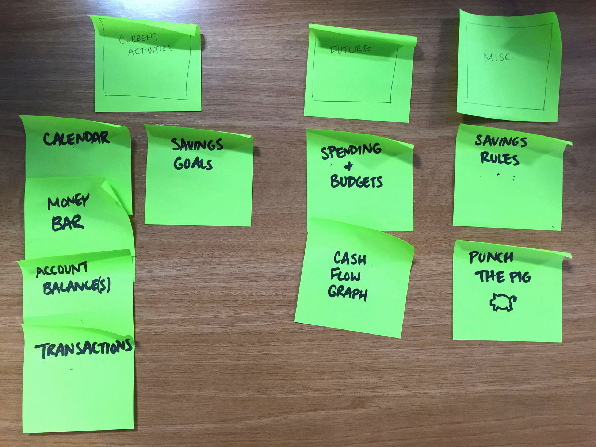
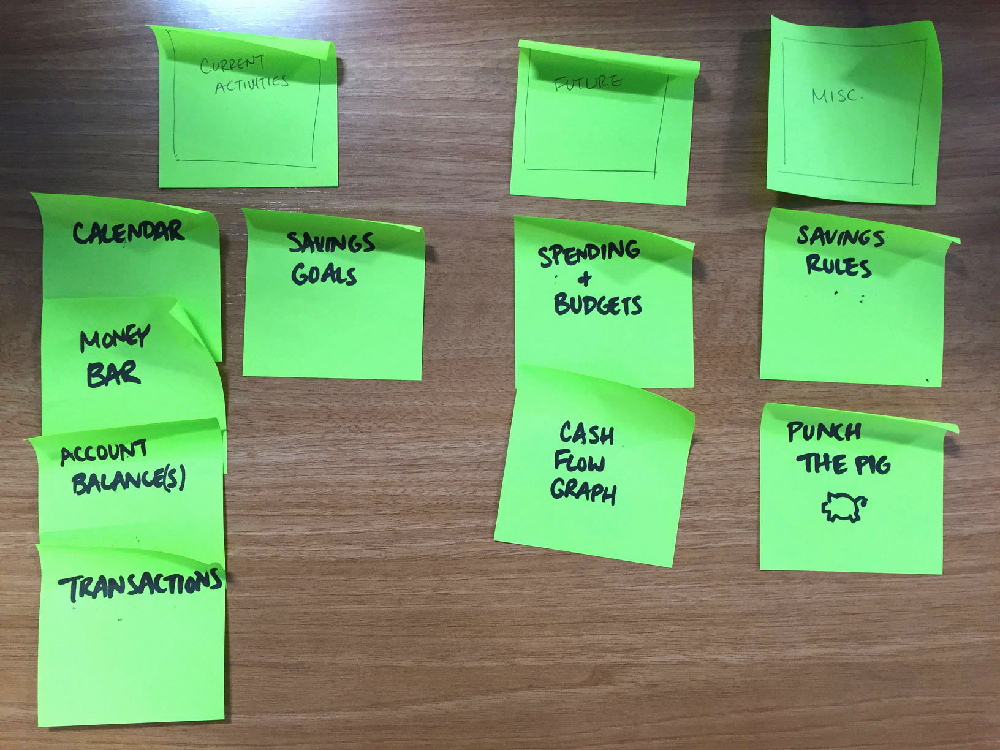
Design
Development
Moving into higher-fidelity mockups, I began testing UI elements, visual components, interactions and navigation. Some example questions:
- Is important content the most visible/discoverable?
- How do users interact with components on the screen?
- Pagination vs. Scroll? Icons vs. Widgets? Color contrast?
Exploration: Tabbed Pages
Content organized across pages (shown right: 3 tabs on the same screen)
Pros
- Less content below the fold
- Content is distinctly organized
Cons
- Tools are less discoverable on the second page
- Presentation of widgets is overwhelming
- Difficult to assign page names
Exploration: Carousel
Content grouped by function into carousel groups
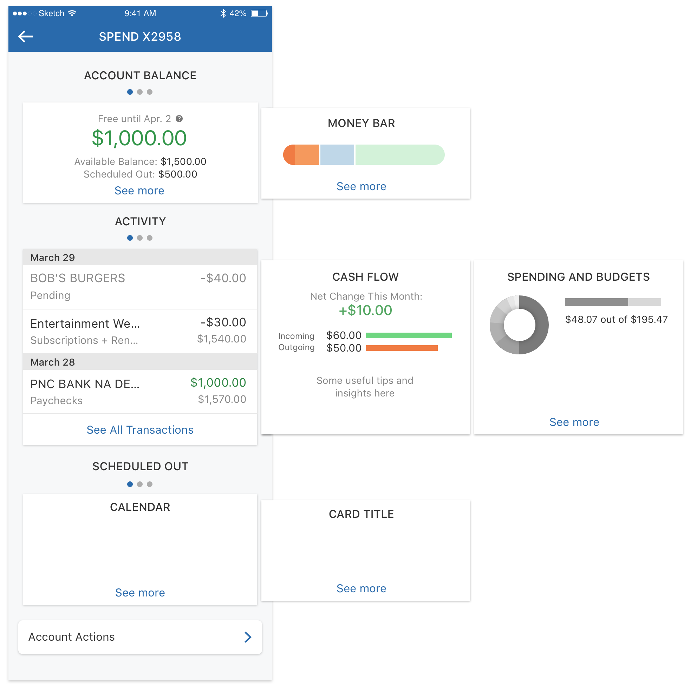Pros
- Brings functional organization to content
- Balance of horizontal and vertical navigation
Cons
- Content didn’t fit well into this structure
- More technical challenges to building carousel cards
Exploration: VW Toolbar
Presentation of VW tools in a "tool bar" (i.e. icons, widgets, etc.)

Pros
- Icons make tools easy to find and identify
- Managing one tool at a time feels less overwhelming
Cons
- Mini widgets don’t show enough to be useful
- Tappable bar and widgets sometimes don’t look interactive
Iconography
For the tool icons, I designed them to match the style of existing icons in the app. I opted to add color, borrowed from VW brand guidelines, to color-code each account's tool set and bring familiarity for VW customers in a new app.
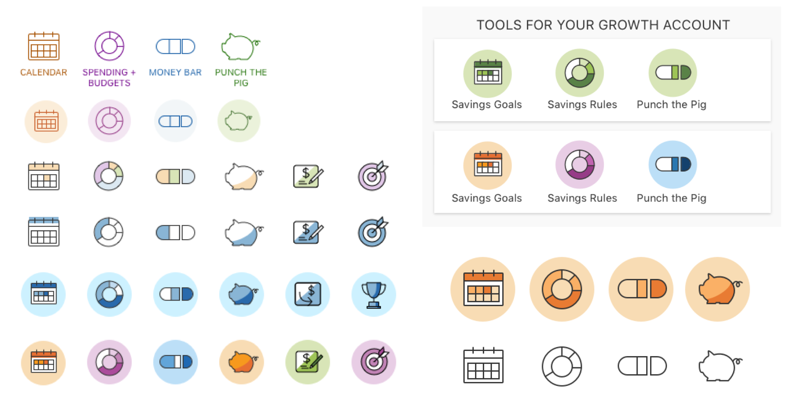Final Screens
Below are the final pages for each of VW's account pages. Each account serves a different role (checking, checking with interest, high-yield savings, and credit card) so they feature unique tool sets designed to support their purposes.
 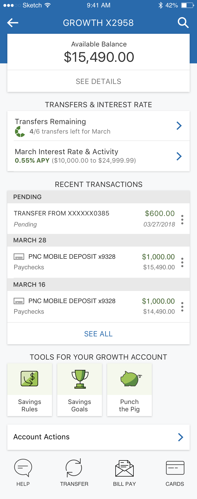
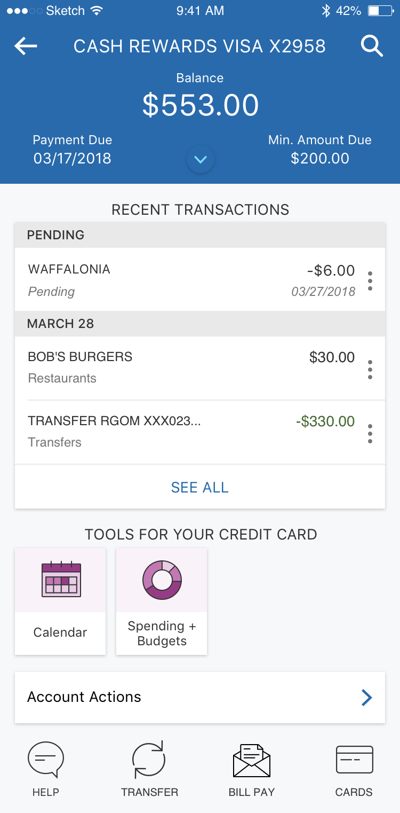
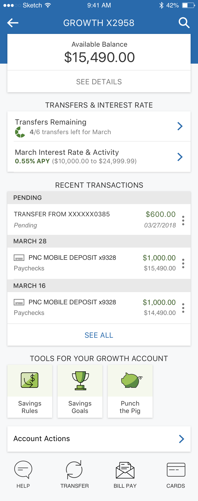
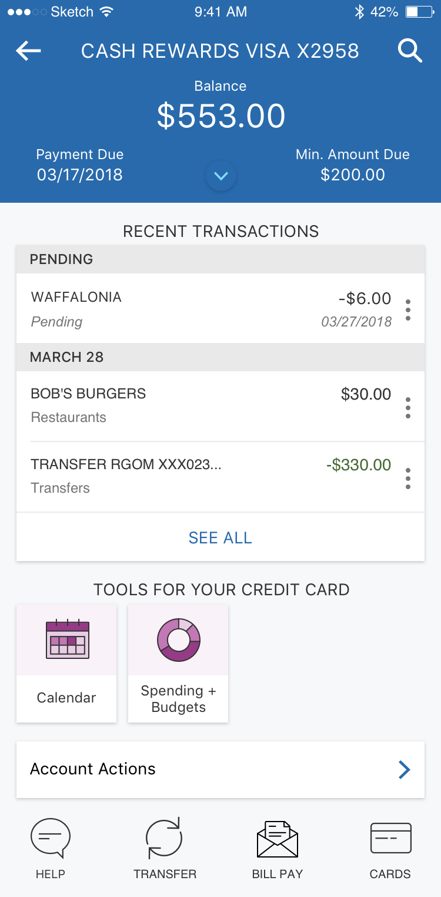
User Flow
This flow shows the key Account Activity screens and how they connect. Scroll down for more detail on what I changed on each screen.
Account Page
- Created clearer visual hierarchy
- Introduced the "tool bar" component, icons and interaction
 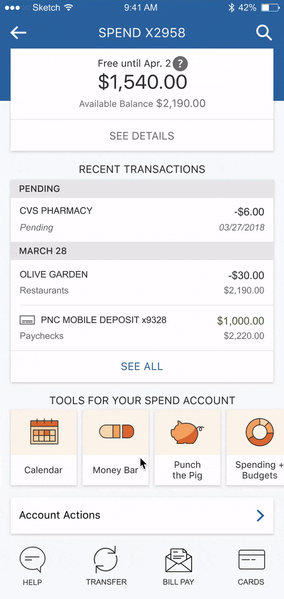
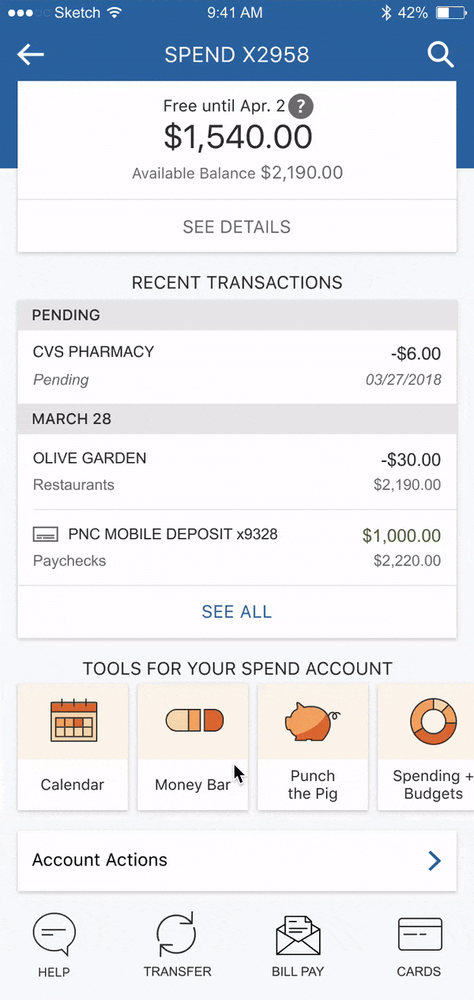
Account Details
- Reduced clutter by hiding less-used information
- Added lines for visual grouping
 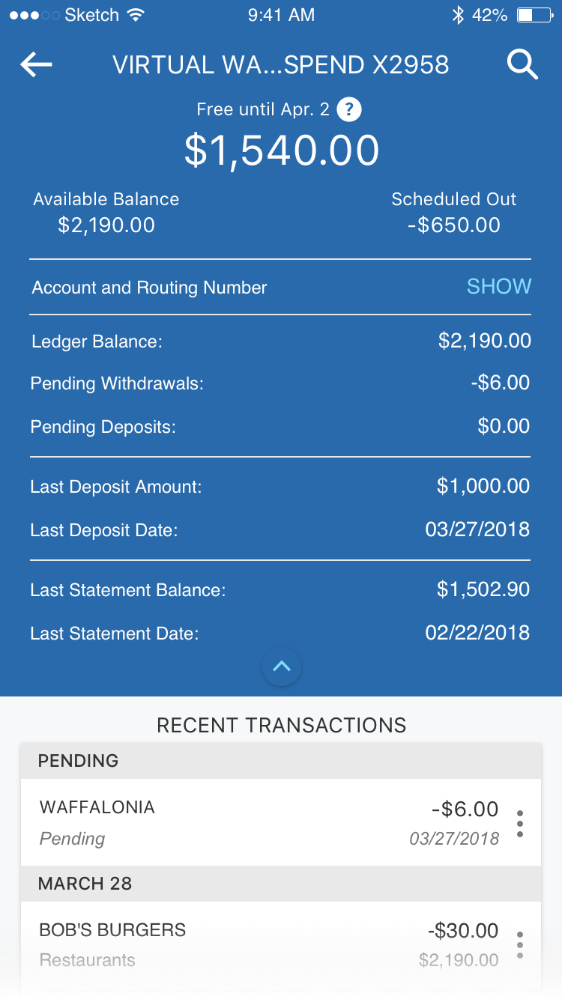
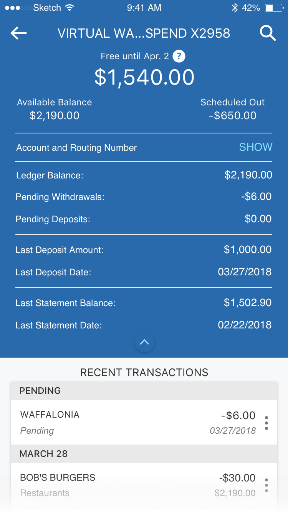
Transactions
- Introduced VW-exclusive “Category” detail
- Increased real estate usage with full width list
Transactions Details
- Introduced “Edit category” functionality
- Layout allows for future detail items
Learning Outcomes
- Working closely with PM’s and developers
- Designing for edge cases and error states
- Collaborating with internal teams about coexisting products
- Navigating constraints set by pre-existing patterns
- Rapidly prototyping with Sketch, InVision, InVision Studio